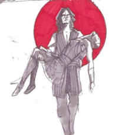
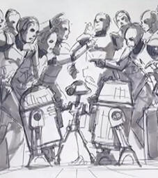
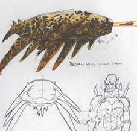
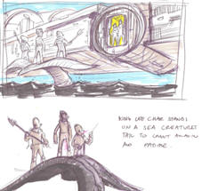
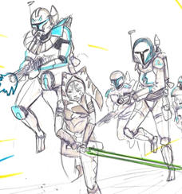

When the Clone Wars was cancelled, Season 8 was planned to be the 20 episode final season and only had scripts written at the time.
Please click on a Image to go each arc's respective page:
705-708: Saving Vos (Season 8 Episode 1-4)

Months after being defeated, Asajj Ventress is recruited to rescue Quinlan Vos from the clutches of Count Dooku. (Forms the second half of the Dark Disciple Novel)
709-712: Rex and R2 Top Gun (Season 8 Episode 5-8)

After the Ground and Air Forces get into an argument, Rex and R2 become stranded on a Ryloth Moon.
713-716: The Yuuzhan Vong (Season 8 Episode 9-12)

An X-Files style story set in the Star Wars Universe featuring the Yuuzhan in a Minimal Way.
717-720: Return to Mon Cala (Season 8 Episode 13-16)

Padme's fight against Palpatine's prolonged stay in office leads her to uncover an murder plot on Mon Cala.
721-724: The Siege of Mandalore (Season 8 Episode 17-20)

Ahsoka Tano and Bo-Katan attack Mandalore in an attempt to remove it from Maul's control (This story arc was the third out of three to be finished in 2020)